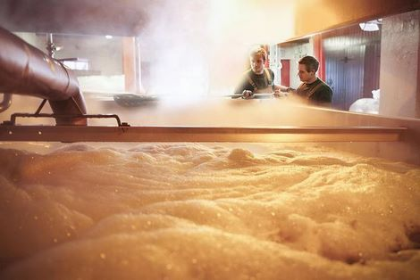

Wort manufacturing:
The origin begins with the preparation of the malted barley grains,which pass through a mill that carefully grinds the insides and leaves the husk whole.Then, maceration is carried out, a process in which, together with water and temperature, the starches of the grains are transformed into fermentable sugars. It is then sent to the filter, where the grain husks allow the liquid to flow and thus the must is sent to the kettle where the sugars are concentrated, the must is sterilized and the hops responsible for the characteristic bitterness of our beer are incorporated.